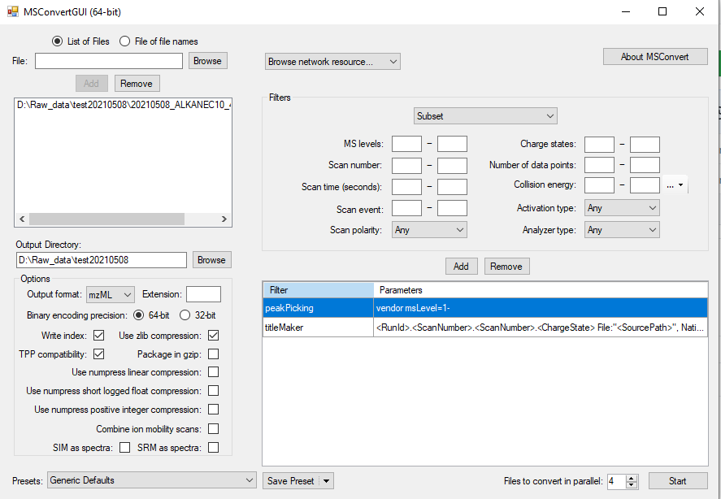

12 Conversion of raw data from HRMS vendor format to open format
INSTALL REQUIRED SOFTWARE
Several software and packages are needed to generate the spectra library. All are open access and free to use for academic purposes.
- Proteowizard: We mainly use MSConvert which is bundled in the Proteowizard software package and you can download it here.
- MS-DIAL: used to analyze the mzML file and generate spectra. Download the latest version here. No installation is necessary so you only need to extract the downloaded zip file to your folder of choice.
- MS-FINDER: used to annotate the individual peaks in the spectrum and export to msp file. No installation is necessary so you only need to extract the downloaded zip file to your folder of choice.
12.1 GC orbitrap HRMS: convert .raw data to .mzML using MSconvert
- The first step is to convert the vendor software format to the open mass spectrometric data format mzML. We use MSConvert to perform this. After installing Proteowizard, open the MSConvert program. Most vendor software record the mass spectra in profile mode, but data processing of this format is usually very time consuming as well as producing very large files. Therefore, during file conversion we will also perform centroiding to make data processing faster as well as reducing the size of the mzML file.
- Open MSConvert.
- Click “Browse” and choose the raw file(s) you want to include and add.
Choose mzML as the output format. Make sure the “Output Directory” is correctly set to the folder you want to store the mzML file. For this library task, you can directly choose the “/MTM_HRMS_LIB/MSDIAL_PROJECT” in the library folder as temporary storage.
In the “Filters” drop down menu, select “Peak Picking”. For “Algorithm”, use “Vendor” for most raw files. Choose appropriate MS Levels you want to include. Use “1 -” to choose all MS levels. For GC data, this is fine (since we are using EI there is only MS1). Press add and then make sure to move the “peakPicking” filter as the first filter as seen in below figure.
If you have many files, it would be wise to increase the “Files to convert in parallel” to speed up the process. However, this depends on your computer processing power the number of cores it has. The other parameters should be set as seen in below Figure @ref(fig:MSConvert).
Now you can proceed with the conversion by clicking “Start”.
After you have finished with the conversion, copy the mzML file(s) to the designated folder in MTM_HRMS_LIB/2_mzML_data/../ (where “..” is the folder depending on your instrument type and analysis mode). If you want, you can now delete the original .raw file if you want to save disk space (although a copy should be available in the analysis instrument or on the server).
12.2 LC-HRMS: convert the raw data file from unifi to mzML using MSconvert
The first step is to convert the vendor software format to the open mass spectrometric data format mzML. We use MSConvert to perform this. The Proteowizard should be already installed in the computer connected the G2 XS qtof instrument. In Windows, search for MSConvertin the search bar and open it. Click on the “Browse network resource” and choose UNIFI. A new window will open which you will see the folders where all raw files are located. Choose the files you want to convert (it might take a couple of minutes before all files are loaded if the folder contain a lot of analysis files). After selecting the files, click on “Open” button.
If you only choose one file, then you should also click on “Add” to add the raw file to the list (see XX). Choose mzML as the output format. Make sure the “Output Directory” is correctly set to the folder you want to store the mzML file.
Most vendor software record the mass spectra in profile mode, but data processing of this format is usually very time consuming as well as producing very large files. Therefore, during file conversion we will also perform centroiding to make data processing faster as well as reducing the size of the mzML file.
In the “Filters” dropdown menu, select the “Peak Picking. For”Algorithm”, use “Vendor” for most raw files. Choose appropriate MS Levels you want to include. Use “1 - 2” to choose all MS1 (channel 1, low energy scan) and MS2 (channel 2, high energy scan). For the G2 XS qtof, there is also channel 3 which is the lock mass and not needed in this case. Click on “Add” and then make sure to move the “peakPicking” filter as the first filter as seen in below Figure @ref(fig:LCMSConvert).
If you have many files, it would be wise to increase the “Files to convert in parallel” to speed up the process. However, this depends on your computer processing power the number of cores it has. The other parameters should be set as seen in below Figure @ref(fig:LCMSConvert).
NOTE: Unfortunately, the conversion to mzML files takes a very long time for unifi files in the current computer and you should convert max 2 files. We might find a better solution for this problem in the future.

Now you can proceed with the conversion by clicking “Start”.
After you have finished with the conversion, copy or move the mzML file(s) to the designated folder in MTM_HRMS_LIB/2_mzML_data/LC_ESI../ (where “..” is the folder depending on the analysis mode, POS or NEG).